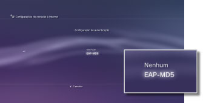
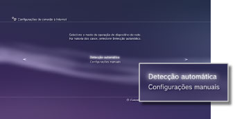
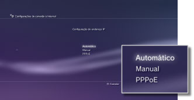
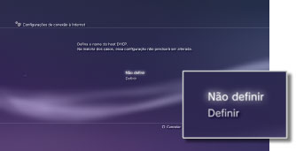
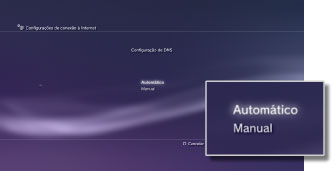
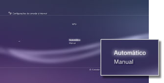
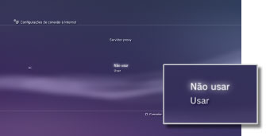
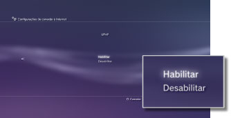

Configurações > Configurações de rede > Configurações de conexão à Internet (configurações avançadas)
Configurações de conexão à Internet (configurações avançadas)
Se você não for capaz de conectar-se à Internet com as configurações básicas, altere suas configurações conforme necessário. Ajuste cada item conforme necessário para seu ambiente de rede particular.
1. |
Selecione |
|---|---|
2. |
Selecione [Configurações de conexão à Internet]. |
3. |
Selecione [Personalizado]. |
 (Configurações) >
(Configurações) >  (Configurações de rede).
(Configurações de rede).Método de conexão
Selecione o método de conexão com a Internet. Esta configuração está disponível apenas em sistemas PS3™ equipados com o recurso de LAN sem fio.

| Conexão com fio | Faça uma conexão com fio utilizando um cabo Ethernet |
|---|---|
| Sem fio | Faça uma conexão sem fio através de uma LAN sem fio |
Configurações de WLAN
Selecione o SSID do ponto de acesso. Esta configuração está disponível apenas em sistemas PS3™ equipados com o recurso de LAN sem fio.

| Buscar | Busque por pontos de acesso próximos. Selecione esta configuração quando você não conhecer o SSID do ponto de acesso. O sistema irá detectar pontos de acesso próximos e irá exibir informações sobre SSID e configurações de segurança. |
|---|---|
| Inserir manualmente | Especifique o ponto de acesso inserindo manualmente seu SSID utilizando um teclado. Selecione esta configuração quando você souber o SSID. |
| Automático | Utilize o recurso de configuração automática do ponto de acesso. Esta configuração está disponível apenas em regiões onde os sistemas PS3™, que suportam este recurso, são vendidos. Selecione esta configuração quando utilizar um ponto de acesso que é compatível com a configuração automática. Siga as instruções na tela. |
Configuração de segurança de WLAN
Selecione uma chave de criptografia de um ponto de acesso. Esta configuração está disponível apenas em sistemas PS3™ equipados com o recurso de LAN sem fio.

| Nenhum | Não selecione uma chave de criptografia. |
|---|---|
| WEP | Selecione uma chave de criptografia. A chave de criptografia pode ser inserida na próxima tela. A chave de criptografia é exibida como uma série de asteriscos. |
| WPA-PSK / WPA2-PSK |
Configuração de autenticação
Estas configurações estão disponíveis apenas em sistemas PS3™ vendidos na Coreia e em sistemas PS3™ equipados com o recurso de LAN sem fio.

| Nenhum | Não seleciona informações de autenticação. |
|---|---|
| EAP-MD5 | Define informações de autenticação quando estiver utilizando serviços de WLAN públicos. Insira sua ID de usuário e senha na próxima tela. Para obter detalhes, consulte as instruções fornecidas pelo provedor de serviço WLAN público. |
Modo de operação ethernet
Selecione a taxa de transferência de dados Ethernet e método de operação. Normalmente, selecione [Detecção automática].

| Detecção automática | Seleciona automaticamente as configurações básicas. |
|---|---|
| Configurações manuais | Ajuste manualmente a taxa de transferência de dados Ethernet e o método de operação. |
Configuração de endereço IP
Selecione o método para obter um endereço IP ao conectar-se à Internet.

| Automático | Utiliza o endereço IP alocado pelo servidor DHCP. Você pode inserir o nome do host DHCP na próxima tela. |
|---|---|
| Manual | Selecione o endereço IP manualmente. Você pode inserir valores do endereço IP, máscara da sub-rede, roteador padrão e DNS primário e secundário na próxima tela. |
| PPPoE | Conecte-se à Internet utilizando PPPoE. Você pode inserir seu ID de usuário e senha na próxima tela. |
DHCP
Selecione o nome do host DHCP. Normalmente, selecione [Não definir].

| Não definir | Não selecione o nome do host DHCP. |
|---|---|
| Definir | Selecione o nome do host DHCP. |
Configuração de DNS
Selecione o servidor DNS.

| Automático | Adquirir automaticamente o endereço do servidor DNS. |
|---|---|
| Manual | Inserir manualmente o endereço do servidor DNS. |
MTU
Configurar o valor MTU utilizado ao transmitir dados. Normalmente, selecione [Automático].

| Automático | Definir automaticamente o valor MTU. |
|---|---|
| Manual | Especifique o tamanho máximo dos pacotes de dados (em bytes) que podem ser enviados em uma transmissão. |
Servidor proxy
Selecione o servidor de proxy a ser utilizado.

| Não usar | Não utilizar um servidor proxy. |
|---|---|
| Usar | Utilizar um servidor proxy. Você pode inserir o endereço e número da porta do servidor proxy na próxima tela. |
UPnP
Selecione para ativar ou desativar UPnP (Universal Plug and Play).

| Habilitar | Habilitar UPnP. |
|---|---|
| Desabilitar | Desabilitar UPnP. |
Dica
Se selecionar como [Desabilitar], a comunicação com outros pode ser restrita ao utilizar o recurso de bate-papo de voz / vídeo ou os recursos de comunicação de jogos.